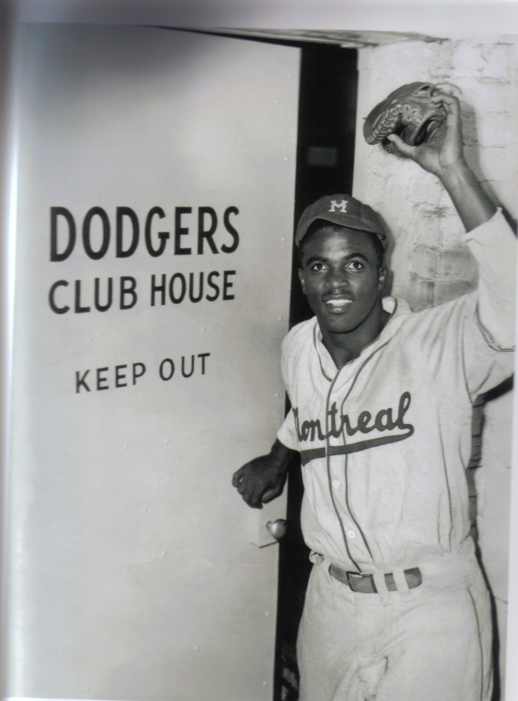

Ligne Verte
Ligne Verte
Chérubin
Ulrick Chérubin
Station Angrignon (formerly)
 Ulrick Chérubin is remembered as a man and a mayor of “great righteousness”. Born in Haiti, he fled to Quebec, much like many other Haitian-Canadians during the Papa Doc dictatorship, in 1970. He settled in Trois Rivières, finishing studies in education. Four years later he moved to the town of Amos, Quebec, along the banks of the Rivière Harricana in Abitibi, a town where he would eventually become mayor for four consecutive terms. First elected in 1998, Ulrick Chérubin became the first black mayor in Quebecois history, in a town that was and still is predominantly white. When he visited Boston, MA in 2010, city councillors there declared January 2 to be Ulrick Chérubin Day in the city of Boston in honor of his visit. Adored by his constituents and fellow mayors all over Canada, Chérubin left a lasting mark on those who knew him. He received 73% of the vote in the final election of his career. He passed away at the age of 70 while still in office.
Ulrick Chérubin is remembered as a man and a mayor of “great righteousness”. Born in Haiti, he fled to Quebec, much like many other Haitian-Canadians during the Papa Doc dictatorship, in 1970. He settled in Trois Rivières, finishing studies in education. Four years later he moved to the town of Amos, Quebec, along the banks of the Rivière Harricana in Abitibi, a town where he would eventually become mayor for four consecutive terms. First elected in 1998, Ulrick Chérubin became the first black mayor in Quebecois history, in a town that was and still is predominantly white. When he visited Boston, MA in 2010, city councillors there declared January 2 to be Ulrick Chérubin Day in the city of Boston in honor of his visit. Adored by his constituents and fellow mayors all over Canada, Chérubin left a lasting mark on those who knew him. He received 73% of the vote in the final election of his career. He passed away at the age of 70 while still in office.
BACK TO MAP
Kahná:wa
Kahná:wa
Station Monk (formerly)
 At a narrow point of the St. Lawrence River, a series of shelf-like drops on the riverbed create an impressive array of rapids that have long been an integral natural feature in the history and development of the area. Large standing waves of water continuously dip and dive and crash down, hindering the passage of large boats. Several man-made bypasses around what are known today as the Lachine Rapids, have been built since the 1820s. But the rapids, known in the Mohawk language (Kanienʼkéha) as Kahná:wa, remain in the psyche of the city. Kahná:wa, one might notice is similar to the word Kahnawà:ke, the name for the First Nations Reserve located on the South Shore. Kahnawà:ke uses the root word of kahná:wa and adds the suffix to make into what translates to ‘on the rapids’. Perhaps the most hurtful of all, however, was the construction of the St. Lawrence Seaway which effectively cut off Kahnawà:ke’s direct access to the shoreline, erasing generations of the river-based community’s livelihood. This disconnection with the natural surroundings has caused a certain disillusionment with the environment among the younger people of Kahnawà:ke. This topic is discussed further in a documentary produced by KahnawàkeTV in 2012, available at the link below. The naming of this station as Kahná:wa hopes to remind us of the forgotten natural areas that have played such a crucial part in the history of the city. The Metro Station is situated a few kilometers north of these famous rapids.
At a narrow point of the St. Lawrence River, a series of shelf-like drops on the riverbed create an impressive array of rapids that have long been an integral natural feature in the history and development of the area. Large standing waves of water continuously dip and dive and crash down, hindering the passage of large boats. Several man-made bypasses around what are known today as the Lachine Rapids, have been built since the 1820s. But the rapids, known in the Mohawk language (Kanienʼkéha) as Kahná:wa, remain in the psyche of the city. Kahná:wa, one might notice is similar to the word Kahnawà:ke, the name for the First Nations Reserve located on the South Shore. Kahnawà:ke uses the root word of kahná:wa and adds the suffix to make into what translates to ‘on the rapids’. Perhaps the most hurtful of all, however, was the construction of the St. Lawrence Seaway which effectively cut off Kahnawà:ke’s direct access to the shoreline, erasing generations of the river-based community’s livelihood. This disconnection with the natural surroundings has caused a certain disillusionment with the environment among the younger people of Kahnawà:ke. This topic is discussed further in a documentary produced by KahnawàkeTV in 2012, available at the link below. The naming of this station as Kahná:wa hopes to remind us of the forgotten natural areas that have played such a crucial part in the history of the city. The Metro Station is situated a few kilometers north of these famous rapids.
BACK TO MAP
Lovelace Nicholas
Sandra Lovelace-Nicholas
Station Jolicoeur (formerly)
As a member of the Tobique First Nation, one of the six Maliseet Nations, Senator Sandra Lovelace Nicholas has worked tirelessly to push forward rights for indigenous women in Canada and around the world. She has been recognized with the Order of Canada and is the first indigenous woman appointed to the Canadian Senate. She began her quest to spread positive change for her brothers and sisters when she challenged provisions of the Indian Act in 1977. Under these provisions, a woman who married a non-indigenous man was stripped of her ‘Indian Status’, but did not nullify the status if an indigenous man married a non-indigenous woman. These policies denied many indigenous women rights for equal access to land ownership, and often clashed with traditional matriarchal relations in these communities. She petitioned the United Nations for the abuses of the Canadian government on indigenous women, Sandra Lovelace v. Canada. In 1985, an entire section of the Indian Act relating to women’s marriage rights was scrapped, partially returning rights to many indigenous women. Today she continues to serve as a Senator and is recognized as part of the six women on the The Feminist Alliance for International Action. an
VIDEOBACK TO MAP
Traoré
Juanita Westmoreland-Traoré
Station Verdun (formerly)
Juanita Westmoreland-Traoré was born in Verdun in 1942, nearby to where Verdun Metro station would be built in 1978. Studying at Université de Montreal (1966) and then completing her doctorate in law at Univertsité de Paris, she would go on to become Québec’s first appointed black judge. She also became the first black Canadian to occupy the position as dean of a law school in Canada in 1996 at the University of Windsor. Though now retired, Juanita Westmoreland-Traoré continues to speak on issues of systemic racism in Quebec, and has called for the courts in Quebec to better represent the pluralistic society we have in Quebec today.
VIDEOBACK TO MAP
Alexandre Dumas
Alexandre Dumas
Station DE L'ÉGLISE (formerly)
 Born in 1802 in France to a mother who had been enslaved in the colony of St. Domingue, soon to become Haiti, Alexandre Dumas, through his excellent sense of prose literature and adventurous spirit, would go on to become one of the most popular authors in history. Period. He wrote books such as The Three Musketeers, The Count of Monte Cristo, and The Man in the Iron Mask. Since his internment in the Pantheon in Paris, reserved for France’s most distinguished citizens, a reevaluation of his image in France’s colonial past, and how his popularity has maintained over the years. In 1843 he published a shorter novel named “Georges” which follows the story of a Mauritian boy, “a half-French Mulatto, leaves Mauritius to be educated in France, and returns to revenge for the affronts he had suffered as a boy.” Dumas’s books are still read in schools all over the island of Montreal and are fully in stock at the nearby Bibliothèque et Archives nationales du Québec Grande Bibliothèque located at the former Berri-UQAM station, and will be for years to come.
Born in 1802 in France to a mother who had been enslaved in the colony of St. Domingue, soon to become Haiti, Alexandre Dumas, through his excellent sense of prose literature and adventurous spirit, would go on to become one of the most popular authors in history. Period. He wrote books such as The Three Musketeers, The Count of Monte Cristo, and The Man in the Iron Mask. Since his internment in the Pantheon in Paris, reserved for France’s most distinguished citizens, a reevaluation of his image in France’s colonial past, and how his popularity has maintained over the years. In 1843 he published a shorter novel named “Georges” which follows the story of a Mauritian boy, “a half-French Mulatto, leaves Mauritius to be educated in France, and returns to revenge for the affronts he had suffered as a boy.” Dumas’s books are still read in schools all over the island of Montreal and are fully in stock at the nearby Bibliothèque et Archives nationales du Québec Grande Bibliothèque located at the former Berri-UQAM station, and will be for years to come.
BACK TO MAP
Two-Axe
Mary Two-Axe Earley
Station Lasalle (formerly)
Mary Two-Axe Earley was an integral part of advancing women’s and indigenous rights in Canada. Though her challenges on sections of the Indian Act, “treaty rights have been reclaimed, post-secondary education has become a reality, health services secured and the wounds of a political injustice soothed”. Like Sandra Lovelace Nicholas, she also was wronged by the section that discriminated against indigenous women who ‘married out’ of status. In 1929, Ms. Two-Axe Earley moved from the Kahnawà:ke reserve where she had grown up, to Brooklyn, New York, where a neighbourhood called “Little Caughnawaga” which housed mainly Mohawk steel workers, building the New York’s modern skyline. An interesting documentary on this neighbourhood and its history can be found at the link below. It was here that she met and married Edward Earley, a white man, which nullified her Indian Status. Upon returning to the Kahnawà:ke reserve she learned of this injustice and began a lifelong work to regain her rights. Her work ultimately culminated in the passing of Bill-31 in 1985, reinstating thousands of indigenous women under the Indian Act and returning their rights. Mary Two-Axe Earley was the first woman to have her rights reinstated. At the ceremony, Two-Axe Earley declared, “Now I’ll have legal rights again. After all these years, I’ll be legally entitled to live on the reserve, to own property, die and be buried with my own people.”
MARY TWO-AXE EARLEY BIO VIDEOLITTLE CAUGHNAWAGA NFB FILM
BACK TO MAP
Rockhead
Rufus Rockhead
Station Charlevoix (formerly)
Montreal has long been a centre for jazz music. During jazz’s infancy in the days of American Prohibition, performers and fans looked to the north for gigs and entertainment. In 1928 Rufus Rockhead, an entrepreneur and businessman, founded Rockhead’s Paradise, a Jazz club located at present-day rue St. Antoine Ouest. Rockhead’s Paradise 1 was at the centre of Montreal’s black community over the following decades and hosted shows headlining some of the biggest stars in jazz. Louis Armstrong, Billie Holiday, Ella Fitzgerald, Leadbelly, Nina Simone, Fats Waller, Dizzy Gillespie and Sammy Davis Jr. all played shows there. Local jazz artists (also included in this project) Oscar Peterson, Oliver Jones and Billy Georgette, were able to get their starts here. Rockhead paved the way for black club owners when he gained his liquor license in 1929, after several attempts to secure one. Rockhead’s Paradise became the first black-owned business in the city to gain such a license. His station replaces the name Charlevoix, which sits only a few blocks away from a street that currently bears his name.
RELLA BLACK HISTORYBACK TO MAP
Christie
Fred Christie
Station Atwater (formerly)
While little is known about the personal life of Fred Christie, his Supreme Court case Christie v. York of 1936 is a historically significant piece of legal documentation of systematic racism in Canada. Christie was an avid fan of the Montreal Canadiens during the 1930s, a season ticket holder at the Montreal Forum located at Atwater and Ste Catherine where he frequented the York Tavern, a bar nestled within the fabled arena. During the boxing season of 1936, Christie brought two friends to drink at the bar, but was denied service on account of his skin colour. He sued the tavern for 200$ and financial support from Montreal's black community spearheaded the battle all the way to the Supreme Court of Canada. It was here in 1939, in a 4-1 decision, that the highest court in Canada effectively legalized racism, stating that even though it was clear the Tavern`s refusal to serve Christie was based on race, the establishment “was strictly within its rights” to refuse service to anyone they pleased. This decision ultimately, allowed other establishments throughout Canada to conduct similar types of racial discrimination right up until the adoption of the Canadian Charter of Rights and Freedoms in 1982. In a recent article by the CBC, the granddaughter of Christie provided more insight on the person behind the landmark case, his life in Montreal and his expert gardening skills. Christie Station is located directly under the Forum, serving as a namesake for his case.
CBC NEWS COVERAGEBACK TO MAP
Rosie Douglas
Roosevelt "Rosie" Douglas
Station Guy-Concordia (formerly)
As a politician and a human rights activist, Rosie Douglas holds a prominent position in the history of Canadian education and civil rights. His station occupies the spot of Guy-Concordia station, where he attended school in the late 1960s. In 1969, he and Anne Cools were the leaders of the Sir George Williams affair , where more than 400 black students occupied the Computer lab at what is now Concordia’s Hall Building. While the protest started and should have ended as a peaceful one, police caused havoc when a deal was reached resulting in the beating of many of the occupants. Douglas was jailed for 18 months, and then deported following the affair. He returned to Canada to complete a master’s degree at McGill University. Born in Dominica in 1941, a country where he would eventually become Prime Minister, Rosie Douglas went on after the Sir George Williams affair to play an important role in international politics, including helping with the freedom of Nelson Mandela and brokering peace during the Gulf War of 1990. He died in 2000.
BOOK ABOUT THE SIR GEORGE WILLIAMS AFFAIRBACK TO MAP
Sinclair
Murray Sinclair
Station Peel (formerly)
“If you get rid of all of the racists in all of the positions of government, policing, justice, health — you will still have a problem. Because you will have a system that is functioning based upon policies, priorities and decisions that direct how things are to be done, that come from a time when racism was very blatant.” These were part of Murray Sinclair’s outgoing remarks as he retired from the Canadian Senate on January 30, 2021. Sinclair served as a Senator for 5 years after chairing the Truth and Reconciliation Commission (TRC) which focussed on documenting the stories of those who survived psychological and sexual abuse in Canada's residential schools. Murray Sinclair has been instrumental in assuring that 150 years of cultural genocide will not be forgotten. About 150,000 First Nation, Inuit and Métis children were removed from their communities and forced to attend the church-run, government-funded residential schools. In his remarks, Sinclair recognized the progress that has been made over the previous years in bringing attention to this dark history, but he reminded Canadians that it is not only the work of people of colour to preserve these memories and that all Canadians must work towards eradicating racism in their communities. He has criticized the Trudeau government of dragging its feet on too many of the 94 calls-to-action the TRC has provided for government officials to implement. To date, Sinclair states that only 10 articles on the guide have been completed. An interactive guide to all 94 calls-to-action can be found at the link below.
INTERACTIVE GUIDE TO 94 CALLS-TO-ACTIONBACK TO MAP
Cools
Anne Cools
Station McGill (formerly)
Anne Cools, possibly one of the most important people in the history of Canadian politics . In 1984 she became the first black person to hold a seat in the Senate. As a graduate of McGill University in sociology and psychology, she represents an abundance of black leadership among McGill alumni. Along with Rosie Douglas, she helped orchestrate the 1969 Sir George Williams Campus occupation in order to protest unfair grading given to black students. She was later jailed for her participation in the event, and by refusing to plead guilty to the Hall Building’s destruction. During the 1970s she worked in a Toronto shelter that helped women in physically abusive relationships get back on their feet. After several electoral bids in Canadian politics and the Liberal Party, she was appointed by Pierre E. Trudeau to the Senate of Canada in 1984 as the first black woman ever to hold a Senate seat in North America. Serving for 34 years, she has gone on to become the longest serving Senator in Canadian history.
VIDEOBACK TO MAP
Biddle
The Biddle Family
Station Place-des-Arts (formerly)
When they were introduced at the 1995 Montreal Jazz Festival to a roaring crowd, the announcer named them the “Royal Family of Montreal Music”. The Biddle family, lead by bassist Charlie Biddle, have travelled across Quebec playing jazz concerts to thousands of Quebecois in small towns who had never heard the art form live. He also single-handedly organized a jazz festival that would go on the following year to become the Montreal Jazz Festival, the second biggest in the world. His daughter, Stephanie Biddle is a jazz vocalist who frequently appeared alongside Charlie on tours. Sonya and Charlie Biddle Jr. have also been heavily entrenched in the Montreal arts scene. “The Biddle family is a testimony to the racial, linguistic and cultural harmony that is possible here in Montreal.” The Saint-Jean-Baptiste Society stated that: “Without him, Québecers might not have developed their love for jazz that has made Montreal a host of one of the greatest jazz festivals in the world.”
VIDEOBACK TO MAP
Toussaint-L'Ouverture
François Dominique Toussaint-Louverture
Station Saint-Laurent (formerly)
It is a shame the Haitian Revolution is often forgotten in our history books. Beyond being an important event in the formation of black self-autonomy, it is a story of great uprise and justice. Toussaint L’Ouverture was the original architect of the revolution. Coming into power while the colony of St. Domingue was still under French control in 1794 and by 1801 was governing it as an independent state. That same year, he drafted a new constitution for the colony where he reiterated the end of slavery and declared himself the official governor. This was not liked by the white establishment back in France, especially not the emperor Napoleon. L”Ouverture was captured by French troops in 1802 and would die in prison the following year. His dream for liberty and self governance for his homeland was, however, not forgotten, and his compatriot Jean-Jacques Dessalines would carry out the revolution that should be taught about in all Quebec schools today. Station Toussaint-L'Ouverture is located steps away from a newly named Parc Toussaint-L'Ouverture, where stands a statue in his honor, erected in 2017 by Montreal’s Haitian community.
PODCAST EPISODEBACK TO MAP
Johnson
Marsha P. Johnson
Station Beaudry (formerly)
“Marsha P. Johnson was an activist, self-identified drag queen, performer, and survivor. She was a prominent figure in the Stonewall uprising of 1969. Marsha went by “BLACK Marsha” before settling on Marsha P. Johnson. The “P” stood for “Pay It No Mind,” which is what Marsha would say in response to questions about her gender.” - via the Marsha P. Johnson Institute.
Marsha “Pay It No Mind” Johnson’s action on the night of June 28, 1969, at the Stonewall Inn on Christopher Street, when violence directed at members of the LGBTQ community by NYPD officers is remembered as a defining moment of the Gay Rights Movement. Soon after, she gained another nickname, the Saint of Christopher Street.
Station Marsha P. Johnson, located in the heart of Montreal’s Gay Village, sits just a few blocks away from a small crossstreet named rue Saint-Christophe. The Saint comes home.
BACK TO MAP
Jackie Robinson
Jackie Robinson
Station Papineau (formerly)
 One year before he stepped onto Ebbets Field in Brooklyn, as the first black baseball player to break the ‘color-barrier’ of the MLB, Jackie Robinson was batting .349, stealing 40 bases and hitting game winning balls in the Little World Series for the 1946 Montreal Royals. The Royals played at an old ballpark named Delorimier Downs, once located at the corner of DeLorimier Avenue and Rue Ontario. Robinson and his wife Rachel, have fond memories of their year in Montreal. After a series of tumultuous years playing in “Negro Leagues” in the American South where the couple was confronted with violent racism, the welcome to Montreal was a blessing. “When we got to Montreal it was like coming out of a nightmare. The atmosphere in Montreal was so positive, we felt it was a good omen for Jack to play well,” says Rachel Robinson. The Royal’s would go on to win the Little World Series that year and by the next spring Robinson would be skyrocketed into sports and civil rights lore. “Soon after Robinson left Montreal and broke Major League Baseball’s color barrier, his book, “My Own Story”, was published in 1948. This was Robinson’s story in his own words, as told to Wendell Smith, the great sportswriter who is credited with first suggesting Robinson to Brooklyn Dodgers general manager Branch Rickey. In that book, Robinson thought back to the moment he left Montreal. “As my plane roared skyward and the lights of Montreal twinkled and wrinkled in the distance, I took one last look at this great city where I had found so much happiness,” Robinson said. “‘I don’t care if I never get to the Majors,’ I told myself. ‘ This is the city for me. This is paradise.’”
PBS SPOTLIGHTBACK TO MAP
Da Costa
Mathieu Da Costa
Station Frontenac (formerly)
Mathieu Da Costa was the first recorded black person to arrive in the land that is known today as Canada. The story of Mathieu Da Costa in the early age of exploration is one often forgotten by historians, but his work as a translator for both French and Dutch navigators was most likely crucial in Canada’s eventual settlement/invasion [13]. He was a polyglot, meaning he spoke more than 5 languages, including Portuguese, English, French, Dutch and several pidgin languages that helped converse with indegenous people. Da Costa Station replaces the one named for Louis de Buade de Frontenac, an early colonizer of New France who helped authorize the importation of slaves to Quebec.
VIDEOBACK TO MAP
Best
Carrie Best
Station Préfontaine (formerly)
Carrie Mae Best was a human rights activist, author, journalist, publisher and broadcaster who spent her entire life fighting racism in Nova Scotia. Upon serveral incidents of racial discrimination, one of which happenned at the Roseland Theatre where Viola Desmond protested a few years later, Carrie Best set out to prove that no one, not in Nova Scotia, Canada or anywhere else in the world, could take away her dignity. She co-founded The Clarion, one of the first newspapers in Nova Scotia owned and published by Black Canadians. Her career as a journalist allowed the amplification of muted voices in the Black community. Station Best will lie closeby to the offices of the Journal de Montreal, largest newspaper in Quebec by circulation.
CBC ARCHIVES VIDEOBACK TO MAP
Osekare
Osekare
Station Joliette (formerly)
When Jacques Cartier arrived to the island of Montreal in 1536, he came to a Iroquois village near the base of Mont-Royal, which his translators miskatingly named Hochelaga. The name Hochelaga stuck and it currently represents the borough where this station is found. But Hochelaga is most likely a corruption of the Iroquois word 'Osekare', meaning "beaver path".
ARCHEOLOGISTS SEARCH FOR LOST VILLAGEBACK TO MAP
Surin
Bruny Surin
Station Pie-IX (formerly)
 Montreal’s Olympic son. Bruny Surin was born in Haiti and moved to Montreal at a young age. He competed in four Summer Olympic Games for Canada in track and field events, winning the gold medal in Atlanta 1996 for the 4x100m relay. He has also won several medals at World Championships from 1993 - 1999. Running the 100 meter dash, Surin could often beat the 10 second mark, something not often seen at the time. His station’s position near the Olympic Stadium is significant to Black Montreal's contribution to representing Canada’s sporting excellence on the world stage.
Montreal’s Olympic son. Bruny Surin was born in Haiti and moved to Montreal at a young age. He competed in four Summer Olympic Games for Canada in track and field events, winning the gold medal in Atlanta 1996 for the 4x100m relay. He has also won several medals at World Championships from 1993 - 1999. Running the 100 meter dash, Surin could often beat the 10 second mark, something not often seen at the time. His station’s position near the Olympic Stadium is significant to Black Montreal's contribution to representing Canada’s sporting excellence on the world stage.
BACK TO MAP
Violet King Henry
Violet King Henry
Station Viau (formerly)
“People told me it wasn’t a good idea for a girl to be a lawyer, particularly a coloured girl—so I went ahead.”
Violet King Henry accomplished many ‘firsts’ during her long career as a lawyer in Canada and the US. She was born in Calgary, Alberta in 1929. Graduating from University of Alberta as the only woman in her class, she was called to the bar in 1954, becoming the first black woman lawyer in Canada. Her work focussed on advancing the rights of those who had been so often denied a voice in the legal system. King took cases on women’s rights, women in leadership, and equal pay for equal work. After many years working in both the private and public sectors, King moved to the United States where she headed several departments at the YMCA, including executive director of the National Council. Her station is located near a YMCA on Pie-IX Boulevard.
BACK TO MAP
Baldwin
James Baldwin
Station Assomption (formerly)
American writer James Baldwin is a revolutionary figure whose works still influence perspectives on race and inequality in the US, Canada and around the world. In a 1968 interview with the CBC, only a few months after the assissination of MLK Jr., Baldwin expressed his doubts of sustained change that had risen from the Civil Rights Movement. “How much indifference, how much brutality do you expect people to be able to take?" he asked. "After all that marching, and all that pain, all that damage, the country really did nothing except pass token laws and bills. But nothing changed."
TV INTERVIEW IN WITH CBCBACK TO MAP
Gaspard
Dominique Gaspard
Station Cadillac (formerly)
Dominique Gaspard was born in the Afro-French Creole community of St. Katherine’s parish in New Orleans. As a young man, he found an opportunity in a Quebec church at Saint Hyacinthe, before studying medicine at Université de Laval (now UdeM). 3 years later WWI broke out in Europe, and Gaspard was called into a French battalion’s field hospital where he earned a medal for his role in “ensuring the safety and sanitation of the hospital”. At war’s end (and the beginning of the 1918 Influenza pandemic), he returned to Montreal, immediately opening a general physician’s clinic in Montreal’s Black Anglo community centred in the Little Burgundy-Sainte Cunégonde area. Being one of very few bilingual doctors in the city, his prowess was in constant demand. As Dorothy Williams writes, “his story speaks of a complexity of language, ethnicity and migration not often explored in narratives of Quebec’s English-speaking and Black communities.”
DOROTHY WILLIAMS PAPERBACK TO MAP
Fortune
Rose Fortune
Station Langelier (formerly)
 Rose Fortune remains one of the few histories we still have today, of the Black Loyalist population that first settled in Nova Scotia in the late 18th century. Fortune was part of a family who remained loyal to the British who had granted them freedom slavery before the end of the Revolutionary War south of the border. She sailed north to Annapolis Royal, NS. Once there, Fortune distinguished herself as the port’s unofficial police officer, well before the establishment of the police force. Her role was one of directing the flow of goods, giving information to travellers and scolding anyone who misbehaved. “Fortune defied the barriers and prejudices of the time to become a respected and prominent member of the community. In the face of the many threats Black women of her time encountered, she is known for keeping peace and order on the waterfront where she worked for more than 20 years.” Her station rests where Langelier Station did, a few kilometers from the modern Port of Montreal.
Rose Fortune remains one of the few histories we still have today, of the Black Loyalist population that first settled in Nova Scotia in the late 18th century. Fortune was part of a family who remained loyal to the British who had granted them freedom slavery before the end of the Revolutionary War south of the border. She sailed north to Annapolis Royal, NS. Once there, Fortune distinguished herself as the port’s unofficial police officer, well before the establishment of the police force. Her role was one of directing the flow of goods, giving information to travellers and scolding anyone who misbehaved. “Fortune defied the barriers and prejudices of the time to become a respected and prominent member of the community. In the face of the many threats Black women of her time encountered, she is known for keeping peace and order on the waterfront where she worked for more than 20 years.” Her station rests where Langelier Station did, a few kilometers from the modern Port of Montreal.
BACK TO MAP
Jean Alfred
Jean Alfred
Station Radisson (formerly)
Born in Haiti, Jean Alfred moved to Canada and the Outaouais region in 1968. In 1975, he was elected as a councillor for Gatineau City Council and later entered provincial politics where he was elected in Papineau as a Parti Québécois candidate, becoming the first Black person to be elected to the National Assembly of Quebec. He was a proven champion in the political arena, and battled racial injustices and anti-immigration sentiment all along the way, winning over the hearts of many previous doubters in his riding. In an interview shortly after his election to deputy in 1976, he spoke of his wishes to develop a more inclusive Quebecois identity.
INTERVIEWBACK TO MAP
Desmond
Viola Desmond
Station Honoré-Beaugrand (formerly)
The woman of the new $10 bill, Viola Desmond was a beautician, businesswoman and civil rights activist. Desmond is most known for refusing to move seats in a segregated Nova Scotia movie theatre in 1946. Her subsequent trial laid the grounds for the complete abolition of segregation in Nova Scotia. In some ways she is a precursor to Rosa Parks’ stand taken on a Mississippi bus years later [6]. She is the first Canadian woman to be depicted on Canadian currency.
HERTITAGE MINUTEBACK TO MAP
Ligne Orange
Payne
Trevor W. Payne
Station Côte-Vertu (formerly)
Trevor Payne might be the most honored black man in Montreal. Yet before this I had never heard of him. In 1974, the Montreal Black Community Youth Choir (MBCYC) was founded by Trevor W. Payne and Daisy Peterson Sweeney (Oscar Peterson’ sister) and Frank Gabourel. Payne recalls the choir’s first rehearsal as being a defining moment in the choir’s inception: “there must have been 30 or 40 kids [...] The audience at Union United Church went berserk! We did an encore and had to sing the same song again”. From there the Choir took off, playing numerous shows a year all over North America, all directed by Professor Payne himself. In 1982, alongside Oliver Jones, Ranee Lee and Charlie Biddle,the MBCYC, celebrated the 75th Anniversary of the oldest Black church in Montreal in raucous gospec fashion. They have released 12 LPs to date, check them out on Spotify. They have won a Juno Award and performed for Nelson Mandela and Queen Elizabeth II. As for Trevor W. Payne has continued to inspire young minds in the community to pursue music and other passions, and taught for many years at John Abbott College. Again he is incredibly distinguished in the Montreal and Canadian spotlights. These are a sample of some of his awards.
- Recipient of the Order of Canada
Recipient of Her Majesty’s Golden and Diamond Jubilees
1996 - Named one of the Five Most Outstanding Black Graduates in the 175-year history of McGill University
Best Orchestra/Choral Conductors in the history of the City of Montreal
Thomas A. Dorsey Award for Pioneering Gospel Music in Canada
Hour Magazine Hall of Fame
Gala Soba Image Award for his contribution and devotion
BACK TO MAP